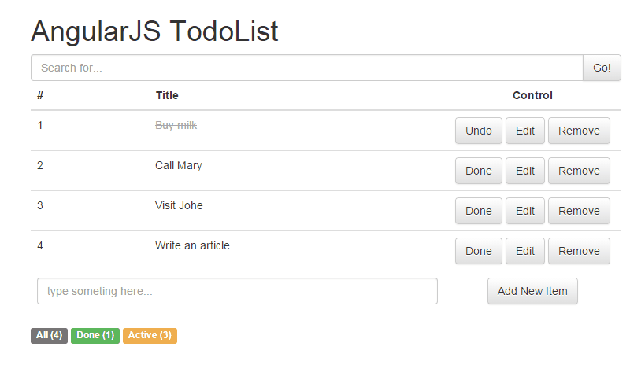

圖片來源：Static translations with AngularJS
大約一年多前(還在前公司)，RD部門的工程師們 被迫 組了讀書會駭客任務，其中一個主題是研究當前火紅的JavaScript框架為之後平台改版做準備，當時還小不懂事的我看到 EmberJS 的可愛LOGO便自告奮勇研讀。

最後公司選了 React ...。居然就這樣了...都沒好好玩到AngularJS XD
好吧，就當作是當年讀書會的複習！從TodoList開始吧！
將todo list存在陣列中，每個todo項目有欄位id、title、status、edit
edit：此todo項目是否在編輯的狀態，0為否，1為是。若處於編輯狀態，畫面會顯示編輯框、儲存鈕，且隱藏編輯鈕。
$scope.todos = [
{ id: 1, title: 'Buy milk', status: 1, edit: false},
{ id: 2, title: 'Call Mary', status: 0, edit: false },
{ id: 3, title: 'Visit Johe', status: 0, edit: false },
{ id: 4, title: 'Write an article', status: 0, edit: false }
];
並且，使用變數counter記錄下一次新增todo項目的id。初始值為todo總數，每新增一次則加一。
$scope.counter = $scope.todos.length;
在搜尋列中，我們利用 ng-model="searchInput" 綁定 <input>，然後將每個會被重複的todo item區塊標註filter而能依照searchInput的值做篩選。
利用 ng-model="searchInput" 綁定 <input>。
<input type="text" placeholder="Search for..." ng-model="searchInput">
filter: searchInput 表示依照searchInput的值做篩選。
<tr ng-repeat="x in todos | filter: searchInput">
...
</tr>
我們可以在最後一行看到一個輸入框，輸入一些文字後按下「Add New Item」按鈕，即可新增新的項目。
<form class="todolistForm" name="todolistForm">
<td colspan="2">
<input type="text" class="form-control" placeholder="type someting here..." ng-model="newItem" required>
</td>
<td>
<input type="submit" value="Add New Item" ng-click="addItem(newItem)">
</td>
</form>
來看上面這段程式碼，ng-model="newItem"綁定這個<inpu>，然後利用 ng-click監聽「Add New Item」按鈕的click事件，當按下這個按鈕時，執行addItem()這個function，同時將newItem的值傳入function。收到值，便更新todos陣列。
欄位驗證相關可參考 AngularJS Input Validation。
$scope.addItem = function(newItem){
var newInputItem = angular.copy(newItem),
newItem = { id: $scope.counter+1, title: newInputItem, status: 0};
if(newItem.title != undefined){
$scope.todos.push(newItem);
$scope.reset();
}
};
angular.copy 用於複製資料，我們取得資料(字串)後放到newItem這個物件的title欄位中。假設這個字串有值(即不為undefined)，那就加入到todos這個陣列裡面，然後reset輸入框(意即還原成尚未打字前的樣子)。
我們分別使用ng-click="edit(x)和ng-click="save(x)綁在兩個按鈕「Edit」和「Save」上，當按下「Edit」時觸發edit()，並出現輸入框來輸入要修改的字串；而當按下「Save」時觸發save()，將修改好字串存回陣列中。
<button type="button" class="btn btn-default" ng-click="edit(x)" ng-hide="x.edit" >Edit</button>
<button type="button" class="btn btn-default" ng-click="save(x)" ng-show="x.edit">Save</button>
只有在編輯狀態才會顯示，所以用 ng-show="x.edit 這個指令設定顯示的時機。
<input type="text" id="edit-input-{{ x.id }}" class="form-control" placeholder="type someting here..." ng-show="x.edit">
將edit設為true，開啟編輯狀態，並將目前的title值帶入輸入框中。
$scope.edit = function(item){
var thisItem = item;
thisItem.edit = true;
document.getElementById('edit-input-' + thisItem.id).value = thisItem.title;
};
傳入此物件並取值，然後設定給title。記得將edit設為false，關閉編輯狀態。
$scope.save = function(item, obj){
var thisItem = item,
thisInputValue = document.getElementById('edit-input-' + thisItem.id).value;
if(thisInputValue != ''){
thisItem.edit = false;
thisItem.title = thisInputValue;
}
}
使用ng-click="remove(x)綁在按鈕「Remove」上，當按下「Remove」時觸發remove()，移除整列項目。
<button type="button" class="btn btn-default" ng-click="remove(x)">Remove</button>
傳入此物件，並搜尋目前todos陣列中這個物件，找到就移除它。
$scope.remove = function(item){
var thisItem = item,
index = $scope.todos.indexOf(item);
$scope.todos.splice(index, 1);
};
如果未完成，則出現以下程式碼，讓使用者可以按下「Done」將這個項目改為已完成的狀態。
<button type="button" class="btn btn-default" ng-click="done(x)" ng-hide="x.status">Done</button>
如果已完成，則出現以下程式碼，讓使用者可以按下「Undo」將這個項目改為未完成的狀態。
<button type="button" class="btn btn-default" ng-click="undo(x)" ng-show="x.status">Undo</button>
//將這個項目改為已完成的狀態
$scope.done = function(item){
var thisItem = item;
thisItem.status = 1; //1：已完成
};
//將這個項目改為未完成的狀態
$scope.undo = function(item){
var thisItem = item;
thisItem.status = 0; //0：未完成
};
顯示全部、已完成、未完成的數目。
顯示全部、已完成、未完成的數目。
<div>
<span class="label label-default">All ({{ totalCount() }})</span>
<span class="label label-success">Done ({{ inactiveCount() }})</span>
<span class="label label-warning">Active ({{ activeCount() }})</span>
</div>
回傳符合條件的todo個數，純粹就是arrray的length計算。。
$scope.totalCount = function(){
return $scope.todos.length;
};
$scope.activeCount = function(){
var activeArray = [];
angular.forEach($scope.todos, function(value, key) {
if(value.status === 0){
this.push(value);
}
}, activeArray);
return activeArray.length;
};
$scope.inactiveCount = function(){
var inactiveArray = [];
angular.forEach($scope.todos, function(value, key){
if(value.status === 1){
this.push(value);
}
}, inactiveArray);
return inactiveArray.length;
};
在表單欄位上標註「required」表示必填，若空白則會出現對話框，提醒「請填寫這個欄位」。
來看一下完成品吧！
